model-calibration
Alexander Keth
2020-10-05
Source:vignettes/model-calibration.Rmd
model-calibration.RmdNOTE: This vigentte is optimised for longer simulation runs. Therefore the output is not as pleasant due to the fact that the dummy setas file have a running time of 5 years.
In order to use this vignette make sure to render model-preprocess.Rmd first. Either save the resulting list of dataframes as shown in data-raw/data-vignette-model-preprocess.R or render both vignettes model-preprocess.Rmd and model-calibration.Rmd in the same R-instance. Of course, you can also use a personalised version of mode-preprocess.Rmd. Please make sure to add all resulting dataframes to the list of dataframes at the end of the preprocess vignette and change model-calibration.Rmd accordingly.
## Warning: package 'ggplot2' was built under R version 3.6.3library("gridExtra") fig_height2 <- 11 gen_labels <- list(x = "Time [years]", y = "Biomass [t]") # You should be able to build the vignette either by clicking on "Knit PDF" in RStudio or with # rmarkdown::render("model-calibration.Rmd")
User Input
This section is used to read in the SETAS dummy files. Please change this accordingly.
result <- preprocess d <- system.file("extdata", "setas-model-new-trunk", package = "atlantistools") # External recruitment data ex_rec_ssb <- read.csv(file.path(d, "setas-ssb-rec.csv"), stringsAsFactors = FALSE) # External biomass data ex_bio <- read.csv(file.path(d, "setas-bench.csv"), stringsAsFactors = FALSE) # bgm file bgm <- file.path(d, "VMPA_setas.bgm")
Whole system plots!
Overall biomass
df_bio <- combine_groups(result$biomass, group_col = "species", combine_thresh = 10)
## Joining, by = "species"plot <- plot_bar(df_bio) update_labels(plot, labels = gen_labels)
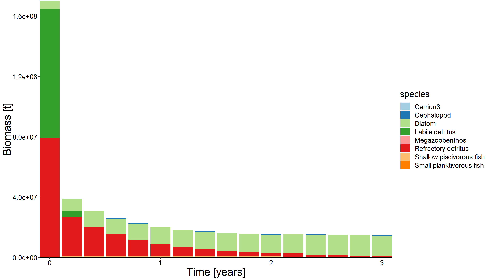
Biomass@age timeseries
plot <- plot_line(result$biomass_age, col = "agecl") update_labels(p = plot, labels = c(gen_labels, list(colour = "Ageclass")))
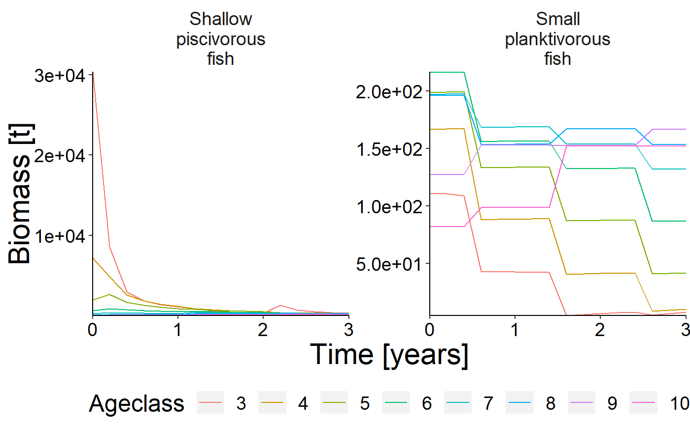
Number timeseries
plot <- plot_line(result$nums) update_labels(p = plot, labels = list(x = "Time [years]", y = "Numbers"))
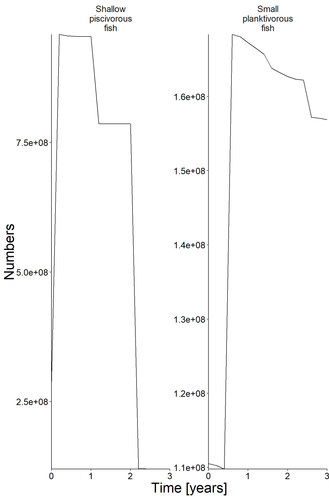
Number@age timeseries
plot <- plot_line(result$nums_age, col = "agecl") update_labels(p = plot, labels = list(x = "Time [years]", y = "Numbers", colour = "Ageclass"))
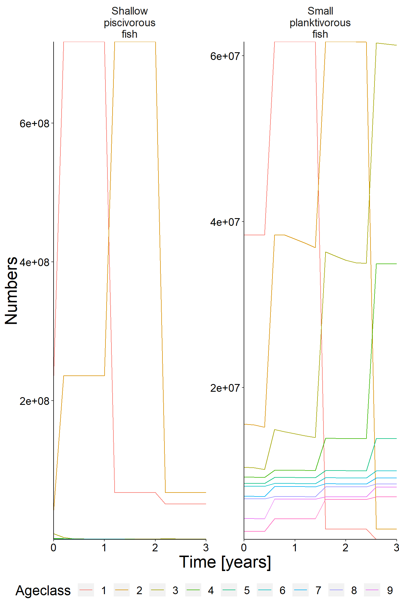
Biomass benchmark
names(ex_bio)[names(ex_bio) == "biomass"] <- "atoutput" data <- result$biomass data$model <- "atlantis" comp <- rbind(ex_bio, data, stringsAsFactors = FALSE) # Show atlantis as first factor! comp$model <- factor(comp$model, levels = c("atlantis", sort(unique(comp$model))[sort(unique(comp$model)) != "atlantis"])) # Create plot plot <- plot_line(comp, col = "model") update_labels(plot, gen_labels)
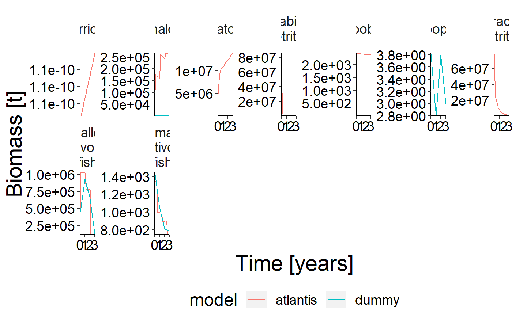
Biomass benchmark 2
plot <- plot_line(result$biomass) %>% update_labels(labels = gen_labels) plot_add_range(plot, ex_bio)
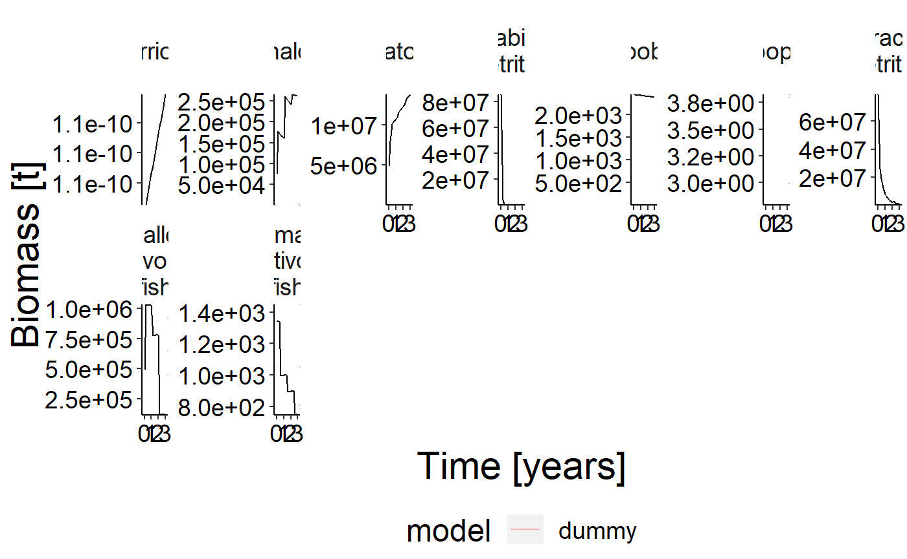
Physics
plot <- plot_line(result$physics, wrap = NULL) custom_grid(plot, grid_x = "polygon", grid_y = "variable")
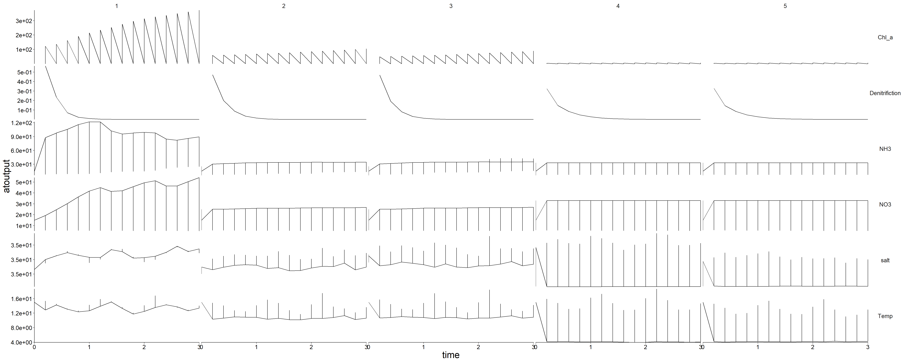
Physics
physics <- result$physics %>% flip_layers() %>% split(., .$variable) plots <- lapply(physics, plot_line, wrap = NULL) %>% lapply(., custom_grid, grid_x = "polygon", grid_y = "layer") for (i in seq_along(plots)) { cat(paste0("## ", names(plots)[i]), sep = "\n") plot <- update_labels(plots[[i]], labels = list(y = names(plots)[i])) print(plot) cat("\n\n") }

Fluxes 1
plot <- flip_layers(result$flux) %>% plot_line(wrap = NULL, col = "variable") custom_grid(plot, grid_x = "polygon", grid_y = "layer")
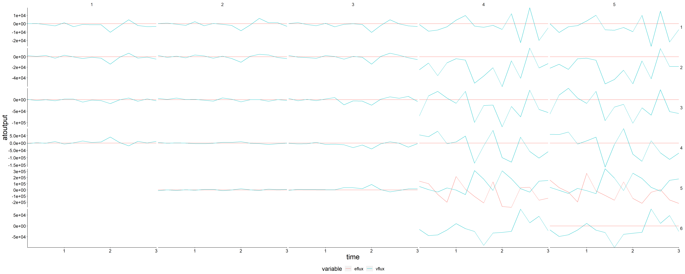
Fluxes 2
plot <- flip_layers(result$sink) %>% plot_line(wrap = NULL, col = "variable") custom_grid(plot, grid_x = "polygon", grid_y = "layer")
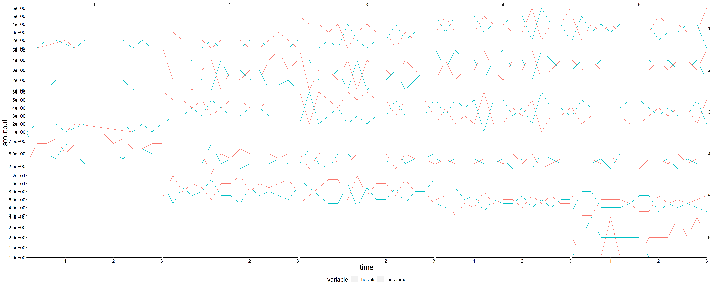
Relative change of water column height compared to nominal_dz
check_dz <- result$dz %>% dplyr::left_join(result$nominal_dz, by = c("polygon", "layer")) %>% dplyr::mutate(check_dz = atoutput.x / atoutput.y) %>% dplyr::filter(!is.na(check_dz)) # remove sediment layer plot <- plot_line(check_dz, x = "time", y = "check_dz", wrap = "polygon", col = "layer") update_labels(plot, list(x = "Time [years]", y = expression(dz/nominal_dz)))
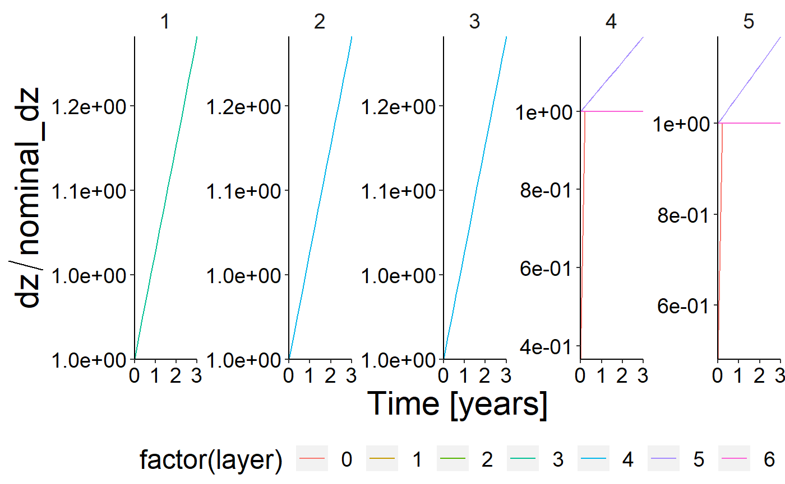
Calibration plots
Structural nitrogen
df_rel <- convert_relative_initial(result$structn_age) plot <- plot_line(df_rel, col = "agecl") plot <- update_labels(plot, list(x = "Time [years]", y = expression(SN/SN[init]))) plot_add_box(plot)
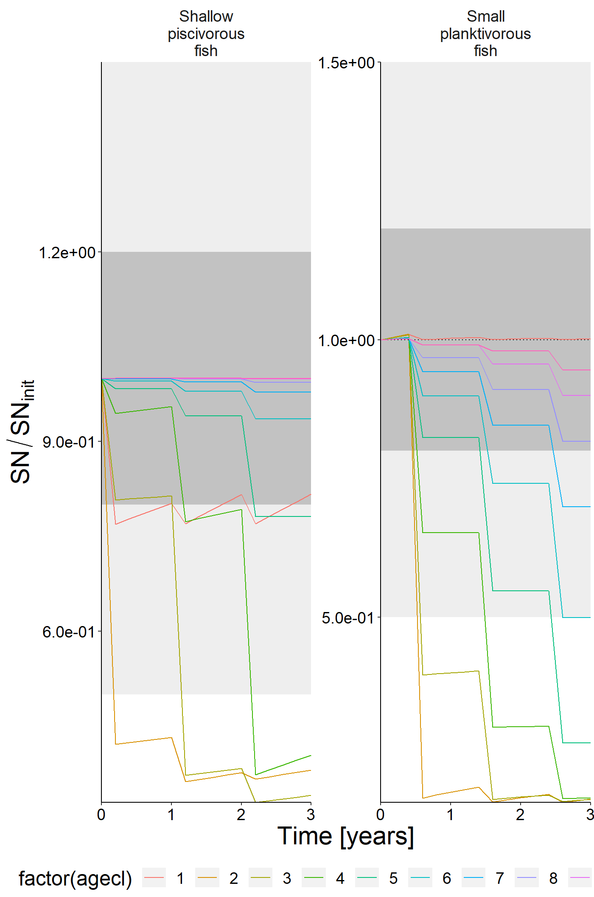
Reserve nitrogen
df_rel <- convert_relative_initial(result$resn_age) plot <- plot_line(df_rel, col = "agecl") plot <- update_labels(plot, list(x = "Time [years]", y = expression(RN/RN[init]))) plot_add_box(plot)

Biomass per ageclass
df_rel <- convert_relative_initial(result$biomass_age) plot <- plot_line(df_rel, col = "agecl") plot <- update_labels(plot, list(x = "Time [years]", y = expression(Biomass/Biomass[init]))) plot_add_box(plot)
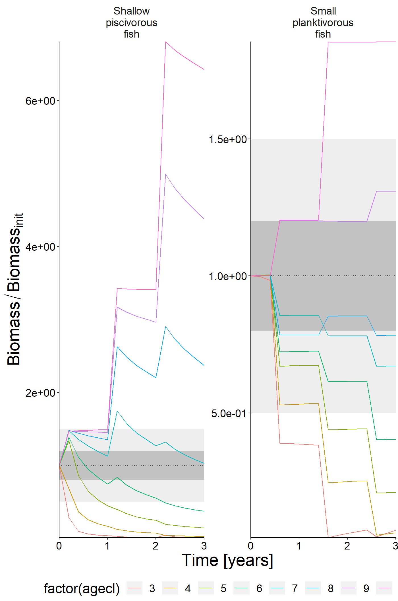
Eat per ageclass
df_rel <- convert_relative_initial(result$eat_age) plot <- plot_line(df_rel, col = "agecl") plot <- update_labels(plot, list(x = "Time [years]", y = expression(Cons./Cons.[init]))) plot_add_box(plot)
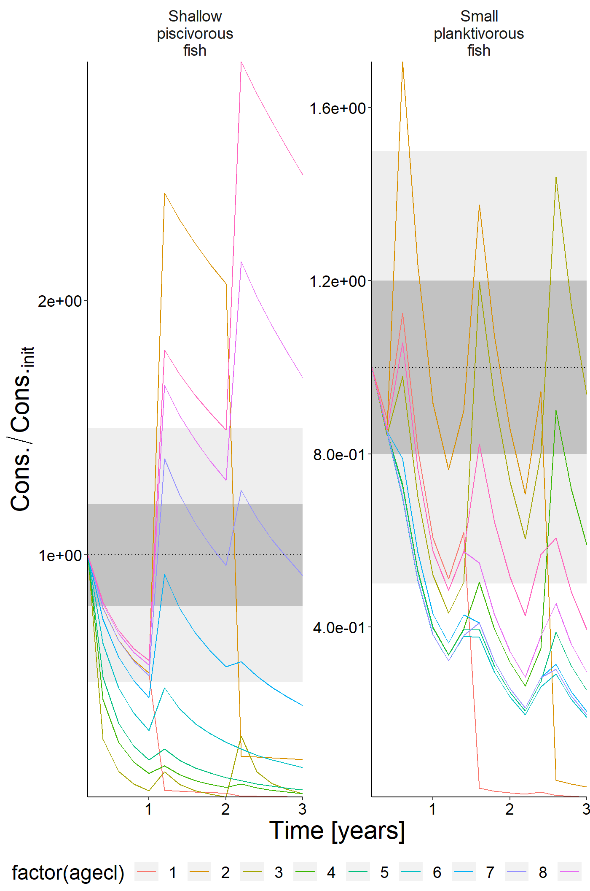
Growth per ageclass
df_rel <- convert_relative_initial(result$growth_age) plot <- plot_line(df_rel, col = "agecl") plot <- update_labels(plot, list(x = "Time [years]", y = expression(Growth/Growth[init]))) plot_add_box(plot)
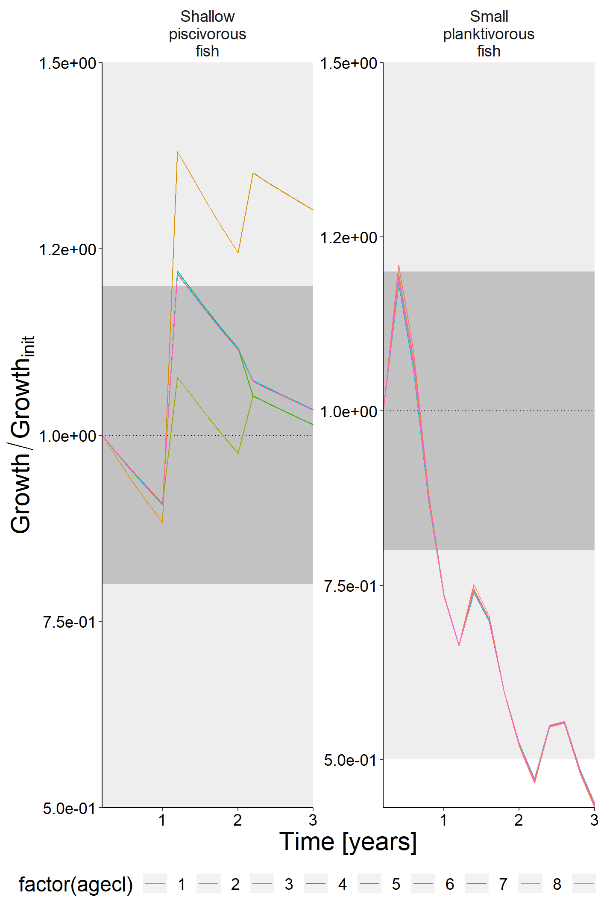
Growth in relation to initial conditions
plot <- plot_line(result$growth_rel_init, y = "gr_rel", col = "agecl") update_labels(plot, list(y = expression((Growth - Growth[req])/Growth[req])))
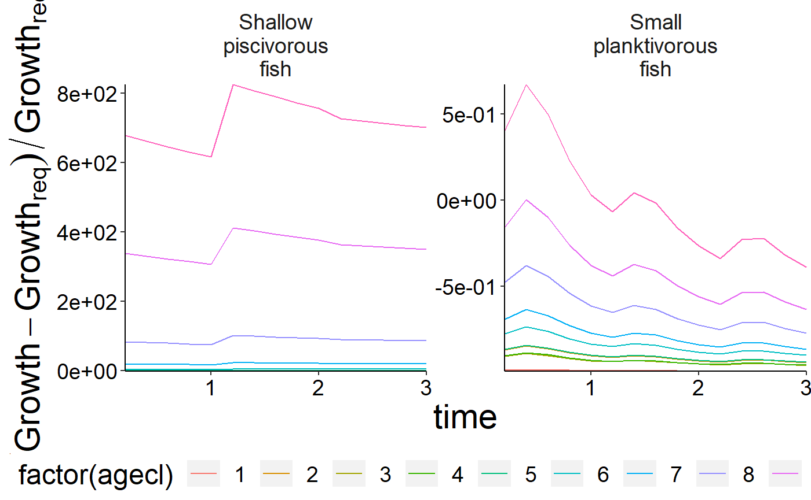
Numbers
df_rel <- convert_relative_initial(result$nums_age) plot <- plot_line(df_rel, col = "agecl") plot <- update_labels(plot, list(x = "Time [years]", y = expression(Numbers/Numbers[init]))) plot_add_box(plot)
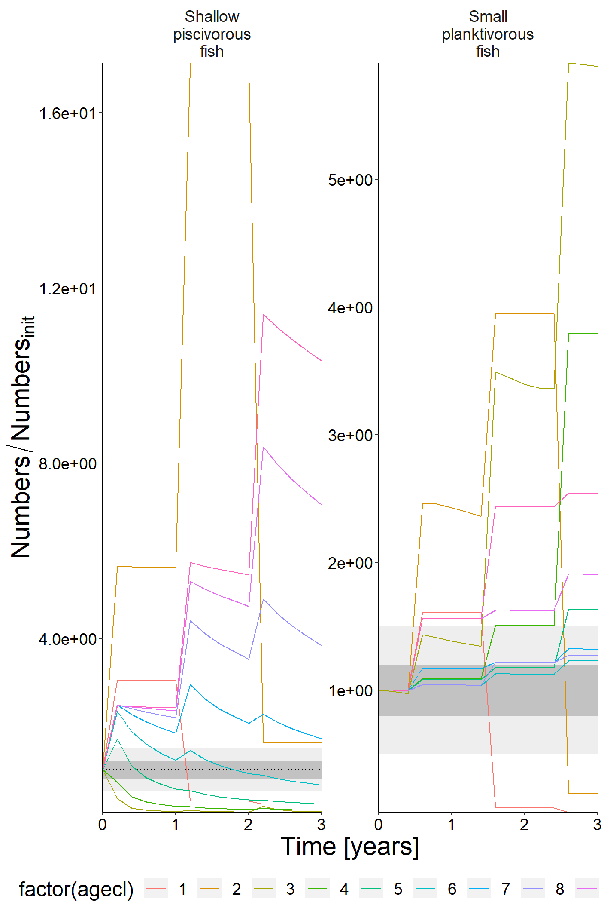
Biomass
df_rel <- convert_relative_initial(result$biomass) plot <- plot_line(df_rel) plot <- update_labels(plot, list(x = "Time [years]", y = expression(Biomass/Biomass[init]))) plot_add_box(plot)
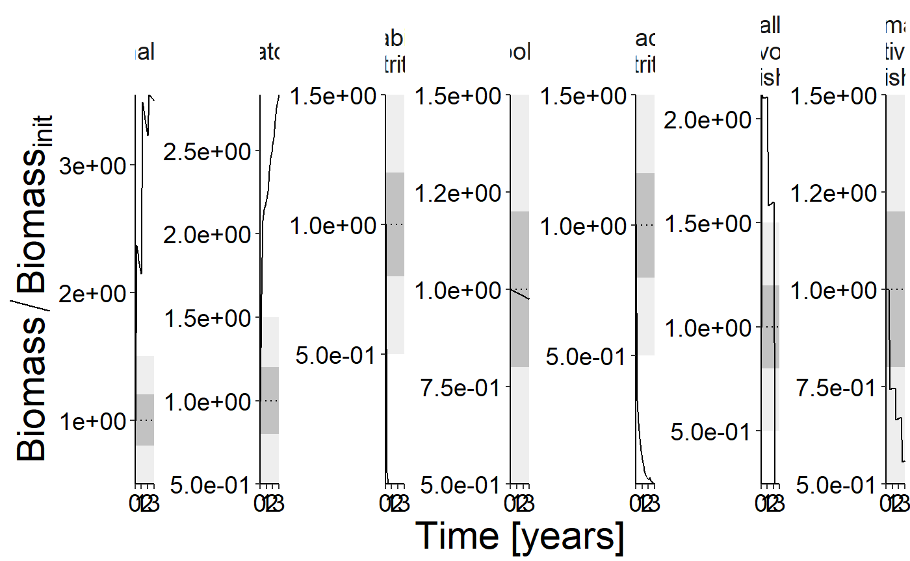
Distribution plots
Numbers @ age
df <- agg_perc(result$nums_age, groups = c("time", "species")) plot <- plot_bar(df, fill = "agecl", wrap = "species") update_labels(plot, labels = list(x = "Time [years]", y = "Numbers [%]"))

Biomass @ age
df <- agg_perc(result$biomass_age, groups = c("time", "species")) plot <- plot_bar(df, fill = "agecl", wrap = "species") update_labels(plot, labels = list(x = "Time [years]", y = "Biomass [%]"))
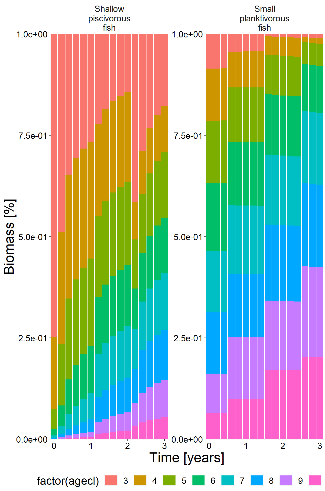
Diet Plots
## Joining, by = c("time", "pred", "agecl", "prey")
## Joining, by = c("time", "pred", "agecl", "prey")Spatial Plots 1
## Joining, by = "polygon"## Coordinate system already present. Adding new coordinate system, which will replace the existing one.
## Coordinate system already present. Adding new coordinate system, which will replace the existing one.
## Coordinate system already present. Adding new coordinate system, which will replace the existing one.
## Coordinate system already present. Adding new coordinate system, which will replace the existing one.
## Coordinate system already present. Adding new coordinate system, which will replace the existing one.
## Coordinate system already present. Adding new coordinate system, which will replace the existing one.
## Coordinate system already present. Adding new coordinate system, which will replace the existing one.
## Coordinate system already present. Adding new coordinate system, which will replace the existing one.
## Coordinate system already present. Adding new coordinate system, which will replace the existing one.
## Coordinate system already present. Adding new coordinate system, which will replace the existing one.